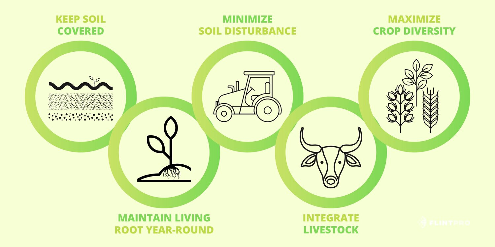

Regenerative Agriculture
Regenerative agriculture is an approach to farming that aims to restore and enhance ecosystem health, biodiversity, and soil fertility while also improving the resilience of agricultural systems. It involves implementing practices that promote the regeneration of natural resources, such as soil, water, and biodiversity.

Soil health and fertility
Focuses on building and improving soil health. Practices like cover cropping, crop rotation, and reduced tillage help increase organic matter content, enhance soil structure, and promote nutrient cycling. Healthy soils retain more water, resist erosion, and support beneficial microbial activity, leading to improved fertility and long-term sustainability.
Biodiversity conservation
Aims to support and enhance biodiversity on farms. By providing diverse habitats, implementing agroecological practices, and preserving natural areas, farmers create conducive environments for beneficial insects, birds, and other wildlife. Biodiversity conservation contributes to natural pest control, pollination, and ecosystem balance, reducing the need for chemical inputs.
Carbon sequestration and climate resilience
Regenerative agriculture plays a vital role in mitigating climate change by sequestering carbon from the atmosphere. Practices like agroforestry, conservation tillage, and managed grazing promote the capture and storage of carbon in soils and plants.
Water management and conservation
Regenerative agriculture emphasizes efficient water management and conservation practices. Techniques such as water harvesting, precision irrigation, and contour plowing help reduce water usage, minimize runoff, and enhance water infiltration. These practices contribute to water conservation, improve water quality, and enhance the resilience of farming systems in the face of drought or water scarcity.
Economic viability and farm profitability
While regenerative agriculture focuses on ecological benefits, it also offers economic advantages. By reducing input costs (such as synthetic fertilizers and pesticides) and improving soil health, farmers can achieve cost savings and increase profitability over the long term. Additionally, regenerative practices often result in improved crop yields, product quality, and market demand for sustainably produced food, providing economic opportunities for farmers.